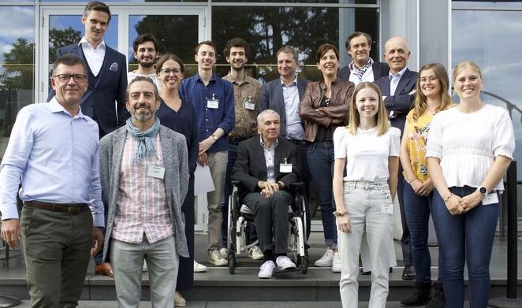

This is a small project I did with my friend Yves Martin
and the support of Dr André Zacharia.
The objective was to develop a special pen to help people with
essential tremor writing better. This idea was selected as part of the Debiopharm challenge
and financed 10'000$ to create a functional prototype in four months. We had to compete
with five other selected teams working on other projects related to health technologies.

The selected participants. Credit: Debiopharm
Our plan was to develop a damping system that would absorb the
tremor vibration around 5Hz. To make our design simpler, cheaper,
and more robust, we opted for a fully mechanical solution based
on spring damper technologies. The tip of the pen can be decoupled
from the pen handle by integrating a custom spring in between. Then the
cut-off frequency can be tuned by weighting the pen and adding damping elements.
The difficulty was to integrate all these elements in a pen
while guaranteeing good damping performances. After many iterations,
we opted for magnetic damping based on Eddy's current which would use very little space.
Final prototype
We manufactured this design using conventional machining and 3D printing.
After some satisfactory tests with a patient, we presented our results to the jury
and won second place and a special technical price for the quality of the design.
This price allowed us to finance a new chapter for this project: we started
a more rigorous study of our prototype to see how patients used our device
and measure its impact on their writing.
After analyzing our first results, we are considering developing a new version
based on active damping with closed-loop control in order to improve the damping
performances.